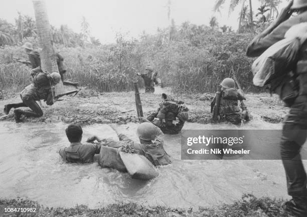

Hitos Importantes de la Guerra
La Guerra Civil salvadoreña fue un conflicto prolongado con múltiples eventos clave que marcaron su desarrollo y desenlace. A continuación, se presenta una línea de tiempo con algunos de los sucesos más relevantes.
Década de 1980: Escalada del Conflicto
- 1979: Golpe de Estado. Formación de la Junta Revolucionaria de Gobierno. Inicio de la actividad armada de grupos guerrilleros.
- 1980: Asesinato de Monseñor Óscar Arnulfo Romero. Creación del Frente Farabundo Martí para la Liberación Nacional (FMLN).
- 1981: Ofensiva "Hasta el Tope" del FMLN. Masacre de El Mozote. Intensificación de la represión y los combates.
- 1982: Elecciones para Asamblea Constituyente. El conflicto se recrudece.
- 1984: Primeras elecciones presidenciales democráticas en años. Inicio de los primeros diálogos de paz en La Palma.
Finales de los 80 y Principios de los 90: Hacia la Paz
- 1987: Diálogos de paz en Ayagualo. Se intensifican los esfuerzos diplomáticos internacionales.
- 1989: Ofensiva "Final" del FMLN, que llega hasta la capital, San Salvador. Asesinato de seis sacerdotes jesuitas en la UCA.
- 1990: Negociaciones de paz auspiciadas por la ONU en Ginebra y Nueva York.
- 1992: Firma de los Acuerdos de Paz de Chapultepec en México el 16 de enero, poniendo fin formal a la guerra.
Cada uno de estos eventos contribuyó a la compleja dinámica del conflicto, modelando su curso y, finalmente, su resolución.